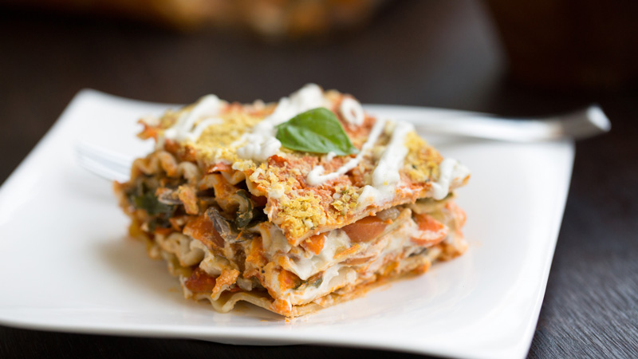
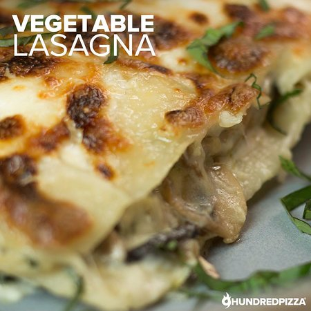

Lasaña de verduras: una pasta en capas con 3 rellenos súper sabrosos

¡Hola amigas y amigos de Paulina Cocina! Bienvenidos a una nueva receta de esas que tantos nos gustan, una especial para las pastas del domingo y los encuentros familiares: lasaña de verduras.
En esta comunidad amamos las pastas y la lasaña nos encanta porque se puede hacer con un montón de rellenos y es una receta sencilla de hacer. Hoy les contamos un poco de la historia de este plato tradicional, algunos tips para prepararlas y tres recetas con diferentes rellenos, con el paso a paso de cada una. ¡A cocinar!
Sobre la lasaña de verduras
La lasaña de verduras es una opción deliciosa y liviana para aquellos que buscan disfrutar de un plato lleno de sabores y nutrientes. Esta versión de lasaña, en lugar de la habitual con carne, se prepara con capas de verduras bien coloridas, ideal para las personas que no comen carne.
La lasaña de verduras es un plato versátil, muy apreciado por su sabor reconfortante y su capacidad de combinar diferentes ingredientes en capas. Es un plato que ha trascendido fronteras y se ha convertido en un clásico de la gastronomía mundial.
La verdad es que, si bien la clásica lasaña suele prepararse con carne, la alternativa de hacer la lasaña con verduras es casi tan popular como su hermana carnívora, y además la posibilidad de rellenos y combinaciones posibles es muy variada.
Esta lasaña de verduras se puede preparar con masa de lasaña hecha en casa, o hasta con masa de empanadas o tarta; pero también existen alternativas en el mercado que son de buena calidad y nos sacan del apuro. No nos vamos a poner ortodoxos con la elección.
4 consejos para preparar la mejor lasaña de verduras
- Elegir verduras frescas y de temporada para obtener el mejor sabor.
- Se pueden sumar diferentes tipos de queso, como mozzarella, ricotta o parmesano, que combinan muy bien con las verduras y además le dan un toque extra de cremosidad.
- Asegurarse de cocinar las verduras al dente (no crudas) antes de armar la lasaña para evitar que se vuelvan demasiado blandas durante la cocción en el horno.
- Sazonar cada capa con sal, pimienta y hierbas aromáticas para realzar los sabores.
Receta de lasaña de verduras fácil con tres rellenos
Opción 1: Lasaña de berenjena y zucchini (calabacín)
- Rinde: 6 porciones
- Tiempo de preparación: 45 minutos
INGREDIENTES
- 12 láminas de pasta para lasaña
- 2 berenjenas grandes
- 2 zucchinis (calabacín)
- 2 tazas de salsa de tomate
- 200 g de queso mozzarella
- 200 g de ricotta
- 50 g de queso parmesano rallado
- Aceite de oliva
- Sal y pimienta a gusto
- Hierbas aromáticas (orégano, albahaca, etc.)
CÓMO HACER LASAÑA DE VERDURAS CON BERENJENA Y ZUCCHINI PASO A PASO
- Precalentar el horno a 180°. Lavar las berenjenas y los zucchini y cortarlos en rodajas finas.
- En una sartén grande, calentar una cucharada de aceite de oliva y saltear las rodajas de berenjena y zucchini hasta que estén tiernas. Retirar del fuego y reservar.
- En un recipiente aparte, mezclar la ricotta con sal y pimienta a gusto.
- En una fuente para horno, colocar un poco de salsa de tomate, luego una capa de láminas de pasta para lasaña, una capa de rodajas de berenjena y zucchini, seguida de otra capa de salsa de tomate, luego otra capa de pasta y por encima una capa de ricotta. Repetir el proceso hasta terminar los ingredientes, terminando con una capa de salsa de tomate.
- Espolvorear con queso mozzarella y queso parmesano rallado sobre la última capa de salsa de tomate.
- Hornear durante 25/30 minutos o hasta que se dore la parte superior. Dejar reposar la lasaña durante unos minutos antes de servir. Decorar con hojas de albahaca u orégano por encima.

Opción 2: Lasaña de espinacas y queso
- Rinde: 6 porciones
- Tiempo de preparación: 45 minutos
INGREDIENTES
- 12 láminas de pasta para lasaña
- 500 g de espinacas frescas o congeladas
- 400 g de ricotta fresca
- 1 taza de queso parmesano rallado
- 2 tazas de salsa de tomate
- 1 taza de salsa bechamel o blanca
- 2 dientes de ajo, picados
- 1 cebolla, picada
- 2 cucharadas de aceite de oliva
- 1 pizca de nuez moscada
- Sal y pimienta a gusto
CÓMO HACER LASAÑA DE VERDURAS CON BERENJENA Y ZUCCHINI PASO A PASO
- Precalentar el horno a 180º. Lavar las espinacas si se usan frescas, o descongelar si están congeladas.
- En una sartén grande calentar aceite de oliva a fuego medio. Agregar el ajo y la cebolla, y cocinar hasta que estén dorados. Agregar las espinacas a la sartén y cocinar hasta que pierdan la mayor parte de su líquido. Condimentar con sal, pimienta y nuez moscada.
- En un recipiente aparte, mezclar la ricotta con la mitad del queso parmesano rallado y salpimentar a gusto.
- En una fuente para horno, extender un poco salsa de tomate y colocar una capa de láminas de pasta encima, luego agregar una capa de la mezcla de espinaca, otra de pasta, y una de la mezcla de ricotta y queso, y así hasta terminar cubriendo con una capa de salsa de tomate y por encima una capa de salsa bechamel o blanca.
- Espolvorear con el resto del queso parmesano y hornear durante 25/30 minutos hasta que la superficie esté dorada. Retirar del horno y dejar reposar durante unos minutos antes de servir.
Opción 3: Lasaña de hongos, verdeo y queso
- Rinde: 6 porciones
- Tiempo de preparación: 45 minutos
INGREDIENTES
- 12 láminas de pasta para lasaña
- 500 g de hongos cortados en láminas (champiñones y portobellos)
- 2 dientes de ajo, picados
- 1 cebolla, picada
- 2 cebollas de verdeo (cebolleta) picadas, la parte blanca
- 2 tazas de salsa blanca
- 200 g de queso mozzarella rallado
- 50 g de queso parmesano rallado
- 2 cucharadas de aceite de oliva
- Sal y pimienta a gusto
CÓMO HACER LASAÑA DE VERDURAS CON BERENJENA Y ZUCCHINI PASO A PASO
- Precalentar el horno a 180º. En una sartén grande, calentar el aceite de oliva y saltear el ajo, la cebolla y las cebollas de verdeo, hasta que se doren. Agregar los hongos y cocinarlos unos minutos hasta que estén tiernos. Retirar del fuego y reservar.
- Agregar la mitad del queso mozzarella rallado a la salsa blanca caliente y mezclar hasta que se derrita y se incorpore por completo.
- En una fuente para horno previamente aceitada, colocar una capa de láminas de pasta para lasaña. Luego, agregar una capa de la mezcla de hongos y cebollas, seguida de una capa de salsa blanca, cubrir con otra capa de pasta y repetir el proceso hasta terminar los ingredientes, finalizando con una capa de salsa blanca.
- Espolvorear con el resto del queso mozzarella y queso parmesano rallado sobre la última capa de salsa blanca.
- Hornear por 25/30 minutos hasta que se dore la parte superior. Dejar reposar unos minutos antes de servir. Decorar con la parte verde de la cebolla de verdeo, picada.
